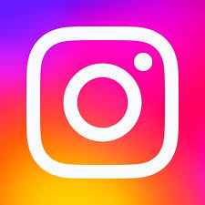

サイトは随時更新していきます。
高専落ちて高校中退して高専に通っているとしている頭のおかしな人間のブログ(リンク集)です。
更新頻度は恐らく低め。
lit.linkみたいなノーコードで作れるものはhtml(HyperText Markup Language)等への冒涜だよ
こんなブログみててもなんにもなんないんで何かしらのリンクに飛んでください。
- twitter

ツイ廃なのでよく動きます。
twitterに旧をつける人は許しません。 - instagram
稼働率低め
平気でインスタに自分の顔写真とか本名晒してるやつらはリテラシー大丈夫なのか心配になりますね＾＾
- YouTube
いつかやる気が出たときに
-
BlueSky
twitterが取り返しのつかないことになったら稼働します、まだROM専
-
ほしいものリスト
買ってくれたらうれしいです
連絡はDMまで